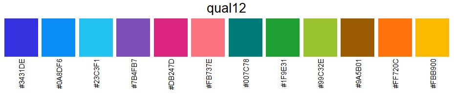
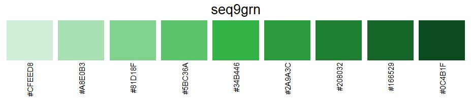
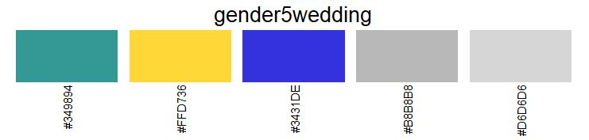

zuericolors is an R-Package, which provides specific colors according to the corporate design of the city of Zurich. The package contains all colors that Statistik Stadt Zürich needs for the creation of graphs. There are two main functions in zuericolors:
-
get_zuericolorsextracts colors of a specific color palette and puts them into a vector. -
view_zuericolorsprints a specific color palette. Is useful for visual inspection.
For the creation of CI/CD conform ggplot2 graphs see the zueritheme and zueriplots repositories.
Installation
The easiest way to get zuericolors is to install it from this repo:
# install.packages("devtools")
devtools::install_github("StatistikStadtZuerich/zuericolors")Alternatively, download the files (by clicking ‘Clone or download’ / ‘Download Zip’), extract it to any location on your computer, e.g. to your Desktop and then run:
remotes::install_local("<path_to_location>/zuericolors-main")Examples
library(zuericolors)
# Get all the colors from palette "qual6"
get_zuericolors("qual6")
[1] "#3431DE" "#DB247D" "#1D942E" "#FBB900" "#23C3F1" "#FF720C"
# Get first color from palette "div9ntrgry"
get_zuericolors("div9ntrgry", nth = 1)
"#A30059"
# Get first four colors from palette "qual12"
get_zuericolors("qual12", nth = 1:4)
[1] "#3431DE" "#0A8DF6" "#23C3F1" "#7B4FB7"
# View color palette "qual12"
view_zuericolors("qual12")
Usage
Grey Palette
The grey color palette is not a palette in the true sense. However, its individual colors are needed for different features in sszviz:
- LightGry
#FAFAFA: A light grey scale is included for use in cases where a data background should be shaded out. - PaleGry
#EAEAEA: A pale grey shade which is used for elements which should be in the background, but shouldn’t completely fade out. Currently used as the color of the links in the sankey diagram. - Gry
#D6D6D6: A grey scale is included for use in cases where a data value should be shaded out. Currently, it is used for the color of inactive lines in the coordinated map and line chart example. At the moment, it has only one value. - DimGry
#B8B8B8: A dim grey shade used for highlighting elements which are normally grey (sszvis.scaleGry()). Currently, it is used as the highlight color in the bubble map. - MedGry
#7C7C7C: The medium grey color, as a standalone value. - DeepGry
#545454: The deep grey color, as a standalone value.

Qualitative Palettes
Qualitative palettes are used for data that has distinct categories. They distinguish categories based on color contrast. They should never be used to compare values, use sequential or divergent palettes in this case.


Sequential Palettes
Sequential palettes are used to compare values. These palettes are designed to have the same brightness for the same input value.




Divergent Palettes
Divergent palettes are used to compare data that has two extremes. These scales are designed to have the same brightness for the same input value. They come in two color variations: the valued (red-green) variation is used for data that has negative-positive characteristics, the neutral (brown-blue) variation is used in cases where no valuation is wanted.


Palettes for Gender, Origin and Marriage
#349894 is used for women, #FFD736 for men, and #986AD5 for people who identify as non-binary.

#349894 is also used for female foreigners (and #00615D for Swiss female), #FFD736 for male foreigners (and #DA9C00 for Swiss male), and #986AD5 for foreigners who identify as non-binary (and #5E359A for Swiss individuals who identify as non-binary).

#349894 is used to depict a marriage between two women, and #FFD736 for a marriage between two men. Same-sex marriages, in general, are represented by the color #3431DE. For a marriage between a woman and an alt=“color palette 9 colors sequential red”unknown partner, #B8B8B8 is used, while #D6D6D6 is used for a marriage between a man and an unknown partner.

Getting help
If you encounter a bug, please contact statistik@zuerich.ch.